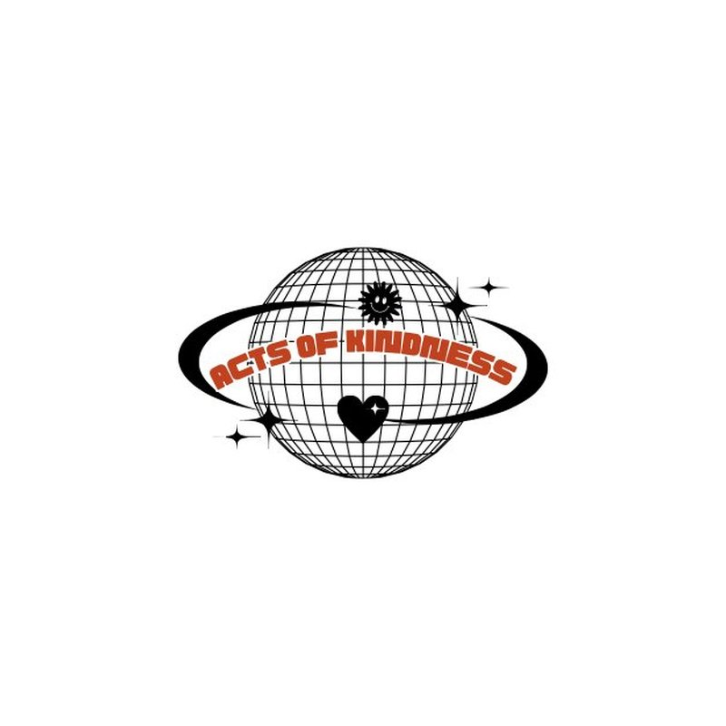
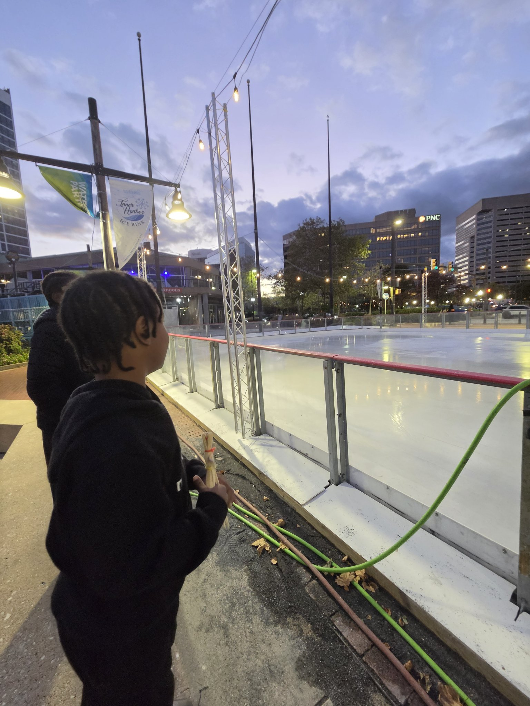
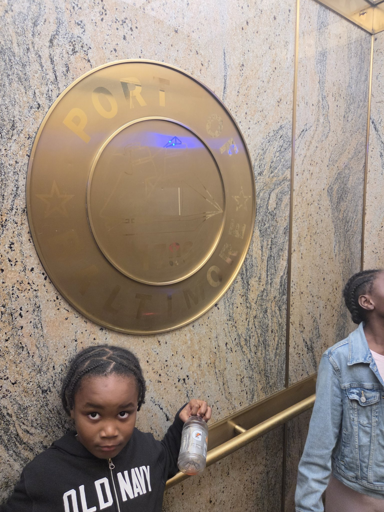
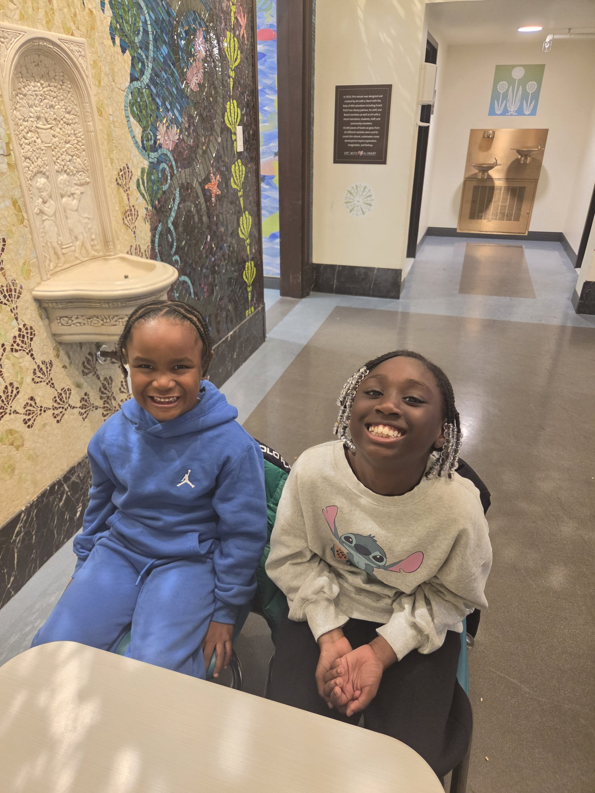
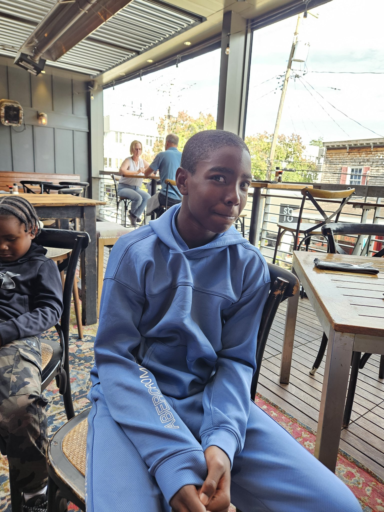
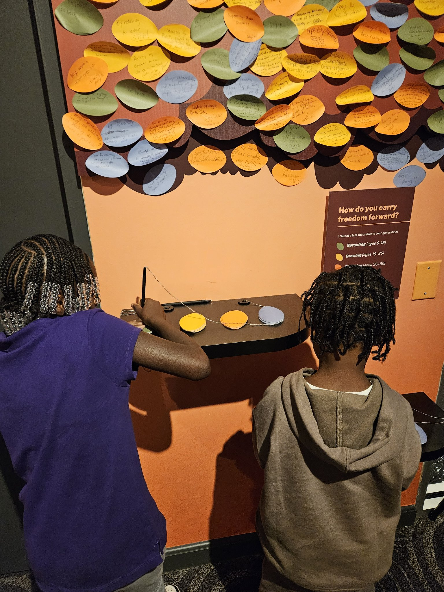
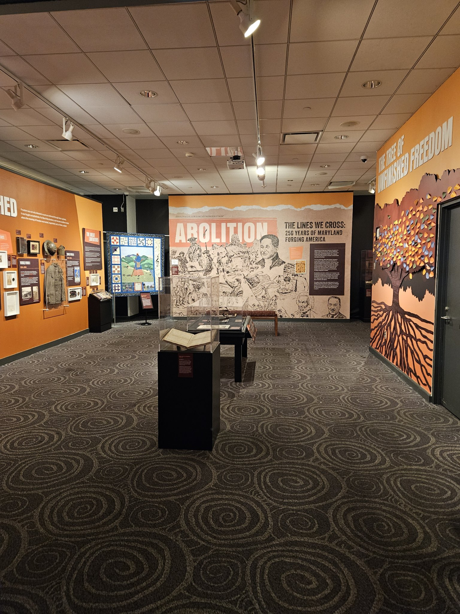
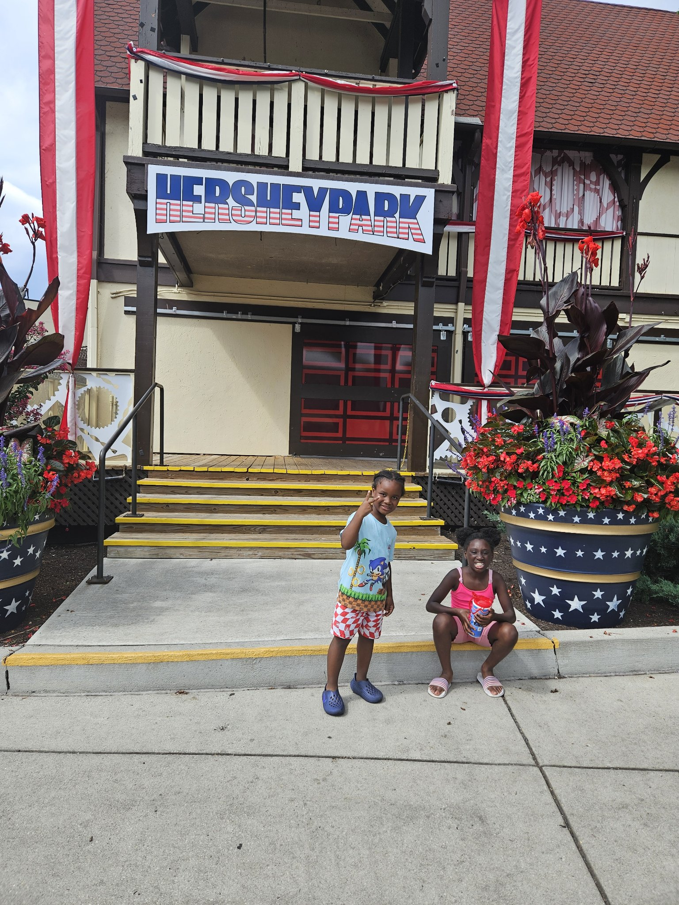
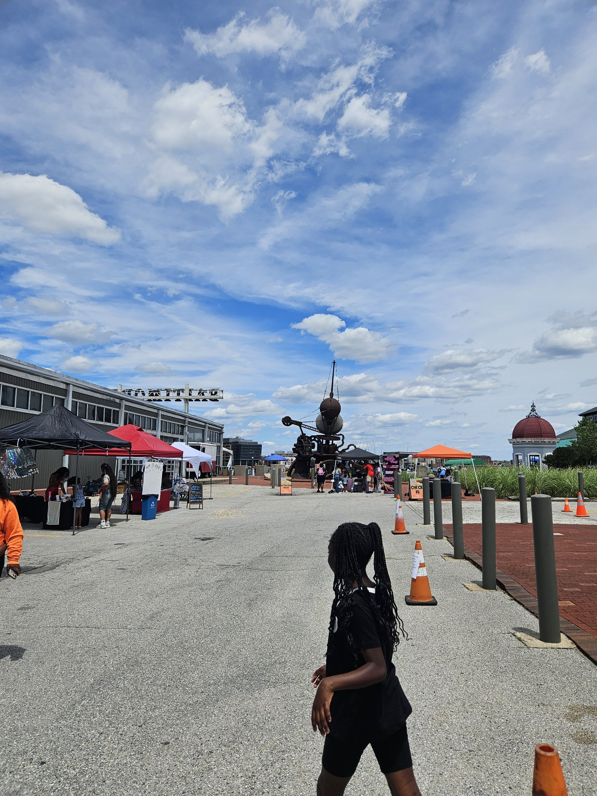
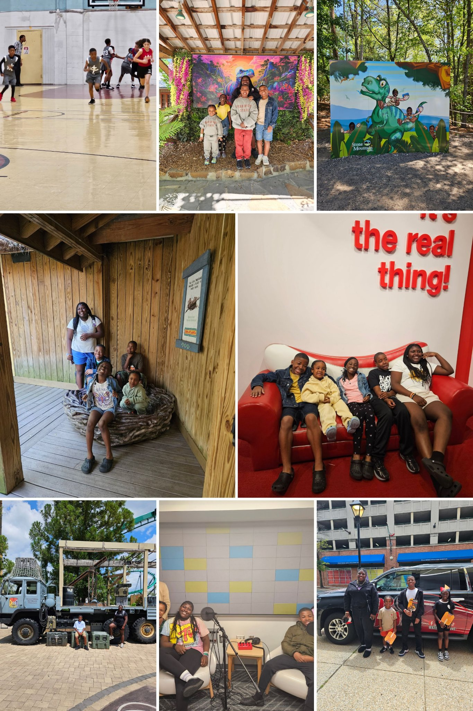

Weekly resource posts
Free resources for Baltimore families, shared each week on our Facebook page.

Acts of Kindness is a Baltimore nonprofit sharing free resources and weekend activities for families, and giving children a platform through the Getting To Know Me kids’ show.
Get in touchActs of Kindness is a nonprofit based in Baltimore. We share free resources and weekend activities for families, so parents and caregivers can find something good to do with their children without it costing anything.
We also give children a platform of their own. Through the Getting To Know Me kids’ show, the Kindness Crew hosts, records, and shares their own thoughts and ideas with the community.
Getting To Know Me is a kids’ show hosted by the Kindness Crew. The children host, co-host, film, and share their own ideas, from taste tests to days out around Baltimore.









Free resources for Baltimore families, shared each week on our Facebook page.
A roundup of family-friendly weekend activities around Baltimore, so families can plan something good to do together.
Seasonal happenings and local events worth knowing about, gathered in one place.
Questions about our resources, the kids’ show, or how to take part? Send us an email and we will get back to you.
You can also find Acts of Kindness on Facebook, where we share our weekly resources and weekend roundups.
Acts of Kindness · 400 E. Pratt St, 8th Floor, Baltimore, MD 21202 · actskind.com